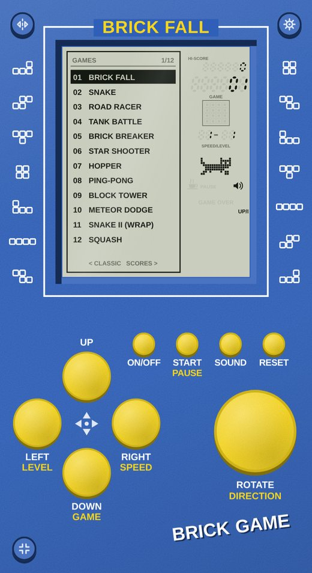
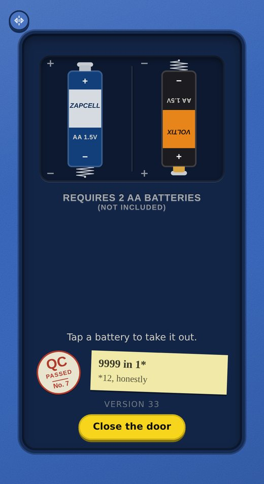

Brick Game
The little pocket handheld with a grey LCD, a D-pad and a big round button, rebuilt to play in the browser. Twelve games, ten speeds, ten levels, and it fits your phone.
Works best full screen on a phone. Add it to your home screen and it plays offline.
▶ Open Brick Game full screenWhat is in it.
- Twelve games: Brick Fall, Snake, Road Racer, Tank Battle, Brick Breaker, Star Shooter, Hopper, Ping-Pong, Block Tower, Meteor Dodge, Snake II and Squash
- Home screen with the list of games, a local top-five scoreboard with dates, and a Classic screen where a little robot plays while you pick speed and level
- Thirteen ready-made looks, plus your own colours for the body, buttons and screen tint, and a clear shell with the board showing through
- Four key layouts and two ways to pick games, the original printed one and a quicker one
- Touch it while it is off: the glass smears dark with rainbow fringes, like a real LCD
- Flip it over: a battery door that slides off, two AA cells you can take out (it will not run without them), and a few things hidden inside


How it is made.
Plain HTML, CSS and JavaScript, no framework and no build step. The LCD is drawn on a canvas, the sounds are synthesised in the browser, and the whole thing is cached so it works offline. The code, art and sounds are original. It is not affiliated with any manufacturer or game company.
Source lives in the blog repository, in the brick folder.